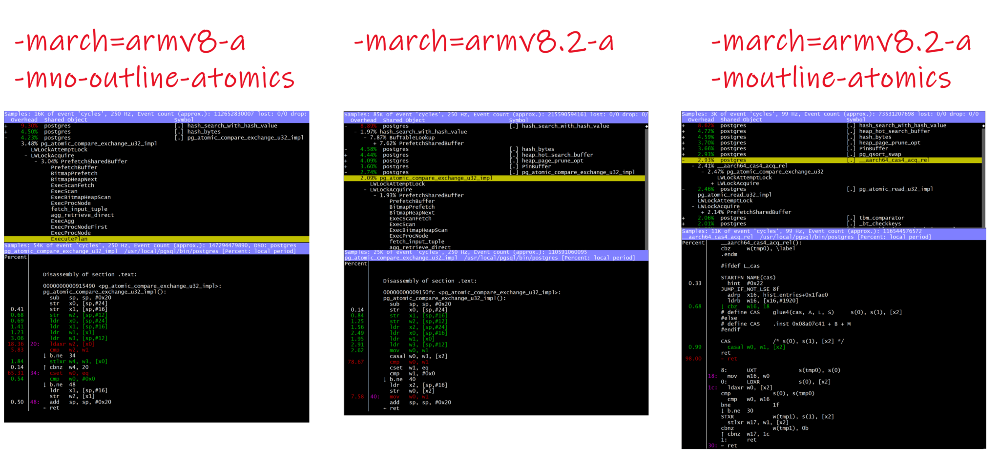

This was first published on https://www.dbi-services.com/blog/postgresql-on-arm-oci/ (2021-05-25)
Republishing here for new followers. The content is related to the versions available at the publication date.
.
This follows the previous post about the Oracle Cloud ARM compute shape just announced on May 25th. The processor is ARM v8.2 with LSE (atomic instructions) and PostgreSQL can benefit from it (see Dramatical Effect of LSE Instructions for PostgreSQL on Graviton2 Instances).
I have installed GCC 11 in the previous post, on a Oracle Linux 7.9 image with comes with GCC 7. If you installed the Ubuntu 20.4 image, you have GCC 9 and I also recommand to install the latest version. Anyway, if you use a version before GCC 11 you must set CFLAGS as below to benefit from ARM v8.1 LSE.
I’ll install PostgreSQL 14 which is currently in beta1:
(
sudo yum install -y git gcc readline-devel bison-devel zlib-devel
curl -s https://ftp.postgresql.org/pub/snapshot/dev/postgresql-snapshot.tar.gz | tar -zxvf -
sudo rm -rf /usr/local/pgsql ; sudo mkdir -p /usr/local/pgsql
cd postgresql-14beta1
make clean
CFLAGS="-march=armv8.2-a+fp16" ./configure --enable-debug
make
sudo make install
cd contrib
make
sudo make install
)
I initially tried to use CFLAGS=”-mcpu=neoverse-n1″ to compile for this processor only (GCC 11 defaults to -m_ouline_atomics to build binaries compatible with ARM v8 but this adds the very small overhead of runtime detection) but I got “unknown architectural extension `rcpc+dotprod+profile'” and that’s why I used CFLAGS=”-march=armv8.2-a+fp16″. Actually installing GCC11 here is not sufficient, the assemble should also be upgraded for Neoverse-N1 instructions. See below for the right usage of GCC in this distribution (devtoolset-10).
[opc@arm-lon ~]$ nm /usr/local/pgsql/bin/postgres | grep -E "aarch64(_have_lse_atomics)?"
[opc@arm-lon ~]$ objdump -d /usr/local/pgsql/bin/postgres | awk '/\t(ldxr|ldaxr|stxr|stlxr)/{print $3"\t(load and store exclusives)"}/\t(cas|casp|swp|ldadd|stadd|ldclr|stclr|ldeor|steor|ldset|stset|ldsmax|stsmax|ldsmin|stsmin|ldumax|stumax|ldumin|stumin)/{print $3"\t(large-system extensions)"}' | sort | uniq -c | sort -n
1 ldclral (large-system extensions)
3 ldsetal (large-system extensions)
12 ldaddal (large-system extensions)
15 casal (large-system extensions)
31 swpa (large-system extensions)
I see no __aarch64_ functions to outline atomics and no load and store for pre-v8.1 ARM because I disabled the default -mno-outline-atomics runtime detection. That’s what I wanted to be optimized for this processor. I’ll compile differently later to check the difference.
/usr/local/pgsql/bin/psql --version
/usr/local/pgsql/bin/initdb -D /var/tmp/pgdata
/usr/local/pgsql/bin/pg_ctl -D /var/tmp/pgdata start
This creates a database and starts the instance
[opc@arm-lon contrib]$ free -h
total used free shared buff/cache available
Mem: 22G 1.0G 4.9G 50M 16G 18G
Swap: 8.0G 0B 8.0G
sed -ie "/huge_pages/s/^.*=.*/huge_pages= true/" /var/tmp/pgdata/postgresql.conf
sed -ie "/shared_buffers/s/^.*=.*/shared_buffers= 4800MB/" /var/tmp/pgdata/postgresql.conf
/usr/local/pgsql/bin/pg_ctl -D /var/tmp/pgdata -l postgres.log stop
I have 24 GB RAM here (which is what Oracle gives you for free – this is quite awesome, isn’t it?)
I’ll use enough shared buffers to fit my working set (4 schemas of 1GB) because I want to measure shared buffer cache access (this is where atimics are used).21
[opc@arm-lon contrib]$ $ grep Hugepagesize /proc/meminfo
Hugepagesize: 524288 kB
The huge pages are 512MB here. This processor is build for large systems and that’s perfect for a database. Of course, I’ll define enough huge pages for the shared buffers.
awk '/Hugepagesize.*kB/{print ( 1 + 1024 * MB / $2 ) }' MB=8192 /proc/meminfo | tee /dev/stderr | sudo bash -c "cat > /proc/sys/vm/nr_hugepages"
/usr/local/pgsql/bin/pg_ctl -D /var/tmp/pgdata -l postgres.log restart
[opc@arm-lon ~]$ free -h
total used free shared buff/cache available
Mem: 22G 9.1G 4.0G 24M 9.4G 10G
Swap: 8.0G 112M 7.9G
Here we are. 8GB for the postgresql shared buffers. 10GB available for the filesystem cache. You need this double buffering because PostgreSQL has no pre-fetching and write ordering optimizations, but still need its own cache to avoid a system call per page access.
I’ll run PGIO to look at the CPU performance, as I did on AWS Graviton2. Because it measures exactly what I want to measure: access to the shared buffers. Without spending all time on client-server calls (see https://amitdkhan-pg.blogspot.com/2020/05/postgresql-on-arm.html for other ways to do it with a pgbench-like workload).
git clone https://github.com/therealkevinc/pgio
tar -zxf pgio/pgio*tar.gz
cat > pgio/pgio.conf <<CAT
UPDATE_PCT=0
RUN_TIME=$(( 60 * 60))
NUM_SCHEMAS=4
NUM_THREADS=1
WORK_UNIT=255
UPDATE_WORK_UNIT=8
SCALE=1024M
DBNAME=pgio
CONNECT_STRING="pgio"
CREATE_BASE_TABLE=TRUE
CAT
/usr/local/pgsql/bin/psql postgres <<<'create database pgio;'
time ( PATH=/usr/local/pgsql/bin:$PATH ; cd pgio && bash setup.sh )
This setup a database for a read-only workload from 4 sessions reading in their own schema. If you are interesting by atomics improvement for AWL lightweight locks, you can set the PCT_UPDATE. But I like to show something that is often overlooked: a read-only workload on the database is still a read-write workload on the shared memory. And there is no connection, parsing, vacuuming, analyze… here. I use Kevin Closson PGIO, the “SLOB method” to run only what I want to measure: pin and read shared buffers.
( PATH=/usr/local/pgsql/bin:$PATH ; cd pgio && bash runit.sh | sed -e "s/^/$n|\t/" )
Date: Sun May 23 16:56:49 GMT 2021
Database connect string: "pgio".
Shared buffers: 4800MB.
Testing 4 schemas with 1 thread(s) accessing 1024M (131072 blocks) of each schema.
Running iostat, vmstat and mpstat on current host--in background.
Launching sessions. 4 schema(s) will be accessed by 1 thread(s) each.
pg_stat_database stats:
datname| blks_hit| blks_read|tup_returned|tup_fetched|tup_updated
BEFORE: pgio | 10070507688 | 6920153 | 9870736490 | 9862382424 | 988185
AFTER: pgio | 10936832180 | 7446586 | 10723766109 | 10715208260 | 988185
DBNAME: pgio. 4 schemas, 1 threads(each). Run time: 600 seconds. RIOPS >877< CACHE_HITS/s >1443874<
objdump -d /usr/local/pgsql/bin/postgres | awk '/\t(ldxr|ldaxr|stxr|stlxr)/{print $3"\t(load and store exclusives)"}/\t(cas|casp|swp|ldadd|stadd|ldclr|stclr|ldeor|steor|ldset|stset|ldsmax|stsmax|ldsmin|stsmin|ldumax|stumax|ldumin|stumin)/{print $3"\t(large-system extensions)"}' | sort | uniq -c | sort -n
1 ldclral (large-system extensions)
3 ldsetal (large-system extensions)
12 ldaddal (large-system extensions)
15 casal (large-system extensions)
31 swpa (large-system extensions)
1443874 page read per second from the 4 sessions. This is 360969 LIOPS/thread, with CFLAGS=”-march=armv8.2-a” which calls the CASAL atomic in order to acquire the share mode LWLock to lookup for the block in the shared buffer partition.
I mentioned that I compiled for ARM v8.2 only rather than relying on the defaults that try to build an ARM v8 compatible binary. Let’s do the same with CFLAGS=”-march=armv8-a -moutline-atomics”.
( PATH=/usr/local/pgsql/bin:$PATH ; cd pgio && bash runit.sh | sed -e "s/^/$n|\t/" )
Date: Sun May 23 16:31:43 GMT 2021
Database connect string: "pgio".
Shared buffers: 4800MB.
Testing 4 schemas with 1 thread(s) accessing 1024M (131072 blocks) of each schema.
Running iostat, vmstat and mpstat on current host--in background.
Launching sessions. 4 schema(s) will be accessed by 1 thread(s) each.
pg_stat_database stats:
datname| blks_hit| blks_read|tup_returned|tup_fetched|tup_updated
BEFORE: pgio | 9196454698 | 6919962 | 9010603761 | 9002477779 | 988150
AFTER: pgio | 10070502579 | 6919975 | 9870712088 | 9862380498 | 988183
DBNAME: pgio. 4 schemas, 1 threads(each). Run time: 600 seconds. RIOPS >0< CACHE_HITS/s >1456746<
objdump -d /usr/local/pgsql/bin/postgres | awk '/\t(ldxr|ldaxr|stxr|stlxr)/{print $3"\t(load and store exclusives)"}/\t(cas|casp|swp|ldadd|stadd|ldclr|stclr|ldeor|steor|ldset|stset|ldsmax|stsmax|ldsmin|stsmin|ldumax|stumax|ldumin|stumin)/{print $3"\t(large-system extensions)"}' | sort | uniq -c | sort -n
1 ldclral (large-system extensions)
1 ldsetal (large-system extensions)
1 stxr (load and store exclusives)
1 swpa (large-system extensions)
2 casal (large-system extensions)
2 ldaddal (large-system extensions)
6 stlxr (load and store exclusives)
7 ldaxr (load and store exclusives)
1456746 page read per second from the 4 sessions. This is 364187 LIOPS/thread, with CFLAGS=”-march=armv8 -moutline-atomics” but with LSE outlined (which is the default in GCC 11). This uses a a runtime detection to use CASAL is LSE are available or LDAXR/STXX if not. I would expect a little overhead for this detection but my test shows that I was able to read nearly 1% more buffers with there. Surprising, isn’t it?
Here are some screenshots fro perf top when those were running: 
You can see that I’ve also run with the ARM v8 without LSE:
( PATH=/usr/local/pgsql/bin:$PATH ; cd pgio && bash runit.sh | sed -e "s/^/$n|\t/" )
Date: Sun May 23 17:17:35 GMT 2021
Database connect string: "pgio".
Shared buffers: 4800MB.
Testing 4 schemas with 1 thread(s) accessing 1024M (131072 blocks) of each schema.
Running iostat, vmstat and mpstat on current host--in background.
Launching sessions. 4 schema(s) will be accessed by 1 thread(s) each.
pg_stat_database stats:
datname| blks_hit| blks_read|tup_returned|tup_fetched|tup_updated
BEFORE: pgio | 10936836909 | 7446768 | 10723783569 | 10715210130 | 988187
AFTER: pgio | 11785746100 | 7973262 | 11559676977 | 11550904052 | 988213
DBNAME: pgio. 4 schemas, 1 threads(each). Run time: 600 seconds. RIOPS >877< CACHE_HITS/s >1414848<
objdump -d /usr/local/pgsql/bin/postgres | awk '/\t(ldxr|ldaxr|stxr|stlxr)/{print $3"\t(load and store exclusives)"}/\t(cas|casp|swp|ldadd|stadd|ldclr|stclr|ldeor|steor|ldset|stset|ldsmax|stsmax|ldsmin|stsmin|ldumax|stumax|ldumin|stumin)/{print $3"\t(large-system extensions)"}' | sort | uniq -c | sort -n
15 ldaxr (load and store exclusives)
31 stlxr (load and store exclusives)
31 stxr (load and store exclusives)
47 ldxr (load and store exclusives)
1414848 page read per second from the 4 sessions. This is 353712 LIOPS/thread, with CFLAGS=”-march=armv8 -mno-outline-atomics”. I’ve run 2% less buffer reads when the LWLock is implemented as load store loop.
I show all these to show how you can check if your binaries use all the processor features, and how to measure and understand the difference. But the numbers have no meaning outside of this specific context. Numbers from benchmarks are useless outside of marketing slides. Here, my context is only 4 sessions (because I want my demos to run on free tier) and PostgreSQL has the shared buffer partitioned to 16 latches. My data is equally distributed, there are no page misses, no session reading the same blocks, no update… I have set, on purpose, the situation with the less contention to show that the lightweight lock optimizations are still important here. And you see where the contention will be in case of CPU starvation: non-LSE loop on load store will be a problem and LSE atomics will help, outlined for runtime detection, or not.
I mentioned above that I installed the latest GCC (version 11) and PostgreSQL (14 beta) for this test, but I think it is important to give the correct way to install the latest stable version (here 13.3) with the latest GCC shipped with OL7 (the devtoolset-10 software collection) as this one has all required components to generate Neoverse-N1 instructions:
VER=13.3 CFLAGS="-mcpu=neoverse-n1" scl enable devtoolset-10 bash <<'SCL'
sudo yum install -y git gcc readline-devel zlib-devel bison bison-devel flex && \
curl https://ftp.postgresql.org/pub/source/v$VER/postgresql-$VER.tar.gz | tar -zxf - && \
cd postgresql-$VER && ./configure --enable-debug && make && sudo make install
SCL
/usr/local/pgsql/bin/initdb -D /var/tmp/test_pgdata
/usr/local/pgsql/bin/pg_ctl -D /var/tmp/test_pgdata start -l /dev/stdout | grep GCC
/usr/local/pgsql/bin/pg_ctl -D /var/tmp/test_pgdata stop
waiting for server to start….2021-05-27 19:20:43.024 GMT [30480] LOG: starting PostgreSQL 14beta1 on aarch64-unknown-linux-gnu, compiled by gcc (GCC) 10.2.1 20200804 (Red Hat 10.2.1-2.0.2), 64-bit
{kind=link}